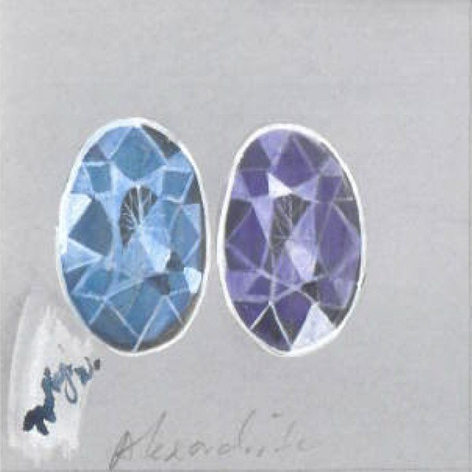
The world's most magical color-change gem — emerald green in daylight, raspberry red under incandescent light. Discovered in the Ural Mountains in 1830, named for Tsar Alexander II. Exceptionally rare in fine quality.
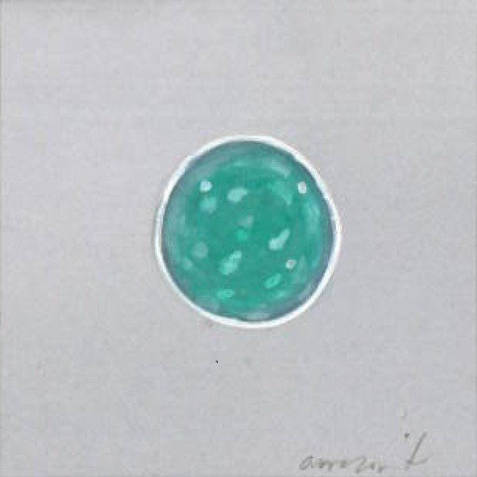
A vivid turquoise-green feldspar named for the Amazon River, though no deposits exist there. Prized in ancient Egypt — found in Tutankhamun's tomb. Its striking teal color is caused by lead and water within the crystal structure.
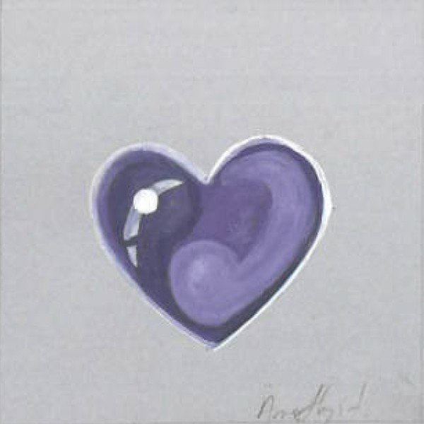
A purple variety of quartz, once considered equal in value to ruby and emerald. The ancient Greeks believed it prevented intoxication — the name derives from amethystos meaning "not drunk." Leonardo da Vinci believed it quickened intelligence.
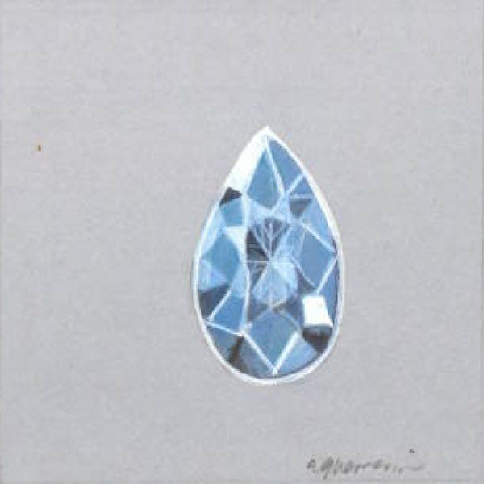
A sea-blue beryl evoking the clearest ocean waters. Roman fishermen carried it as a talisman for safe voyages. Nelly sources hers from Brazil and selects for exceptional crystal clarity and depth of color.
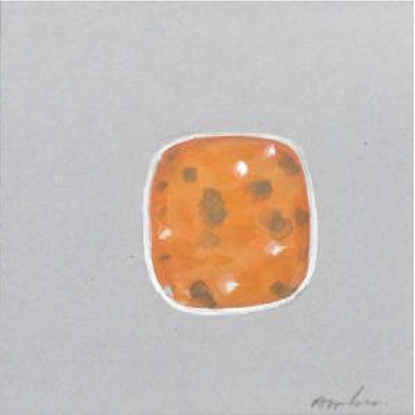
Fossilized tree resin up to 320 million years old. Insects, plants, and small animals preserved inside make each piece a window into a lost world. The Baltic coast has yielded amber since the Stone Age. A piece of organic time.
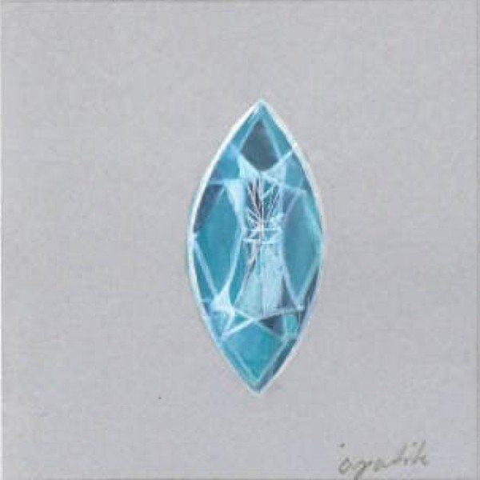
Named from the Greek apate meaning "to deceive" — it has been mistaken for tourmaline, peridot, and beryl throughout history. Neon blue-green Paraíba apatite rivals tourmaline in vivid color intensity at a fraction of the price.
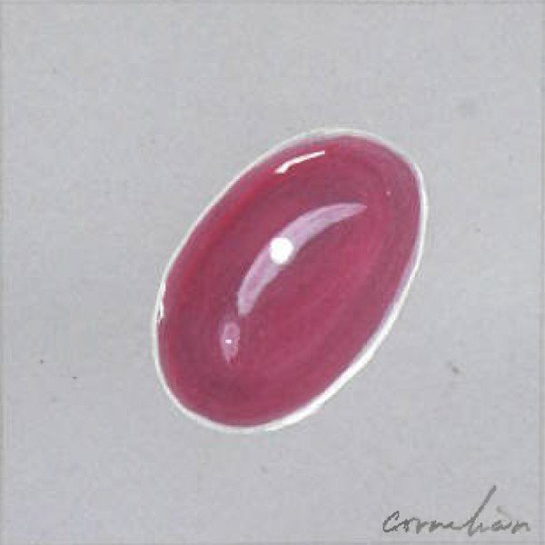
A warm orange-red chalcedony used since the Bronze Age. Napoleon wore a carnelian seal ring. Ancient Egyptians used it for amulets representing the setting sun. The warm fire-orange color is caused by iron oxide inclusions.
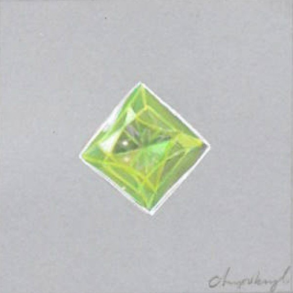
One of the hardest gems after diamond and corundum. Its cat's eye variety displays a brilliant moving line of light — called chatoyancy — across the surface like a living eye. The finest cat's eyes are called "milk and honey."
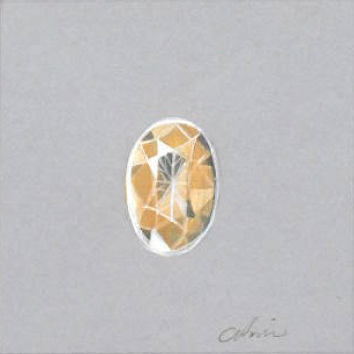
A golden-yellow quartz named from the French for lemon. Natural citrine is rare — most commercial stones are heat-treated amethyst. Called the "merchant's stone" for its supposed ability to attract prosperity and abundance.
An organic gemstone formed from marine polyp skeletons. Prized since antiquity — ancient Romans hung coral around children's necks for protection. The rarest precious red coral from the Mediterranean grows just one centimeter per year.
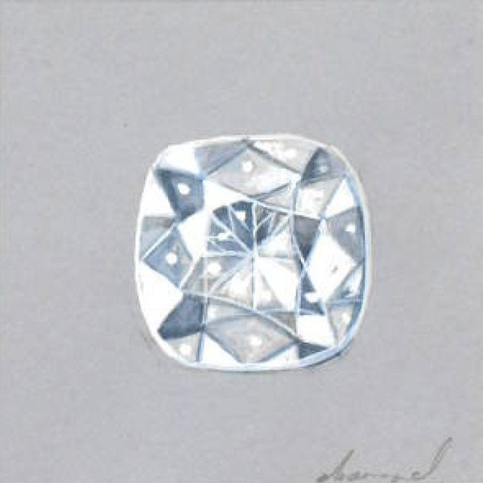
Pure carbon crystallized under extreme heat and pressure 100 miles underground over billions of years. The hardest natural substance on earth. Nelly favors antique old mine cuts — hand-cut stones with greater depth and character than modern diamonds.
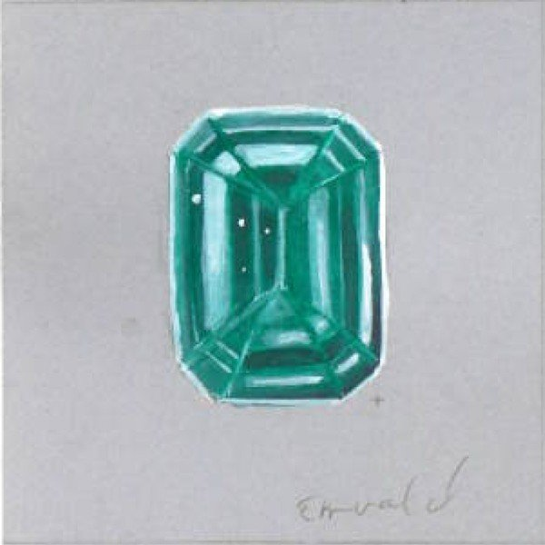
The most valued beryl, its intense green caused by chromium and vanadium. Cleopatra owned emerald mines in Egypt and distributed them as royal gifts. Colombian stones — from Muzo, Chivor, and Coscuez — remain the world standard for finest quality.
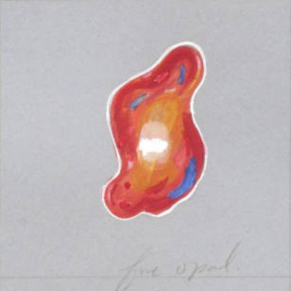
Volcanic in origin, formed in ancient lava flows. Unlike other opals, fire opals are transparent and faceted to reveal extraordinary inner light. The Aztecs called it quetzalitzlipyollitli — the stone of the paradise bird.
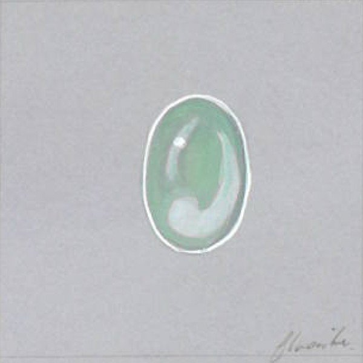
The most colorful mineral in the world — occurring in every color and combination. Strongly fluorescent, glowing brilliant blue under UV light. The very word "fluorescence" was derived from fluorite. Chinese artisans have carved it for millennia.
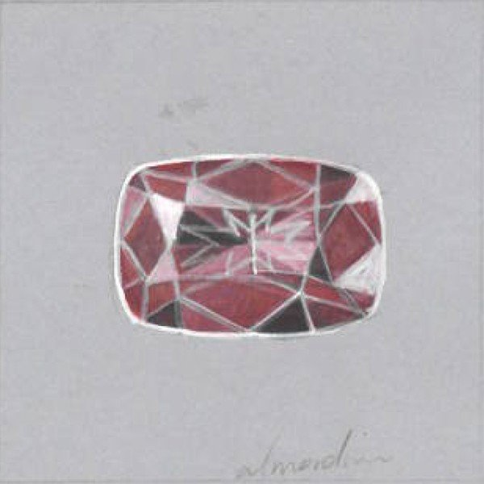
The most common garnet, ranging from deep red to reddish-brown. Known since the Bronze Age — Viking craftsmen set it in sword hilts. Crusaders carried garnets as talismans for protection. Its name derives from medieval Latin alabandicus.
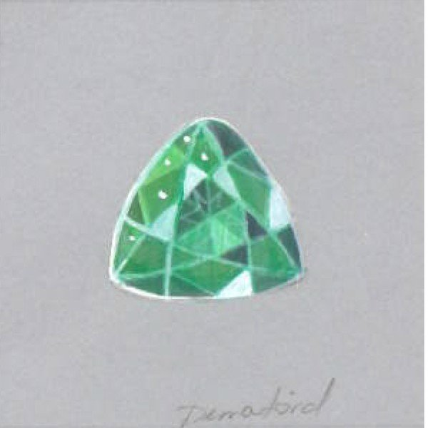
The most valuable garnet — a vivid green andradite with dispersion fire exceeding even diamond. Russian demantoids contain characteristic "horsetail" inclusions considered a mark of authenticity. Fabergé used them extensively in his imperial eggs.
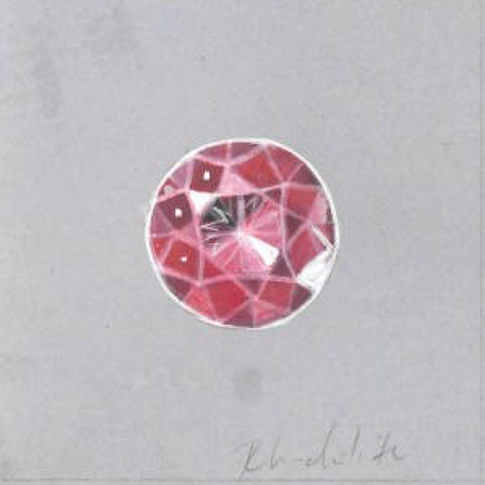
A raspberry-pink to violet-red garnet — a blend of pyrope and almandine. Named from Greek rhodon (rose) and lithos (stone). Its vivid color rivals fine ruby at a fraction of the price. East African deposits produce the finest specimens.
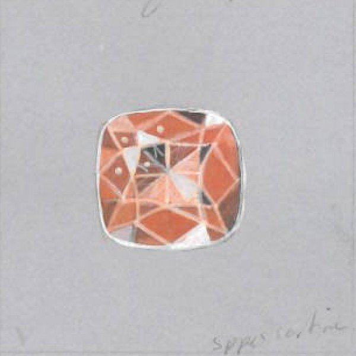
A fiery orange-red garnet with exceptional brilliance. Nicknamed "mandarin garnet" for its vivid orange variety discovered in Namibia in the 1990s. Large, clean specimens are extremely rare — most have inclusions that reduce transparency.
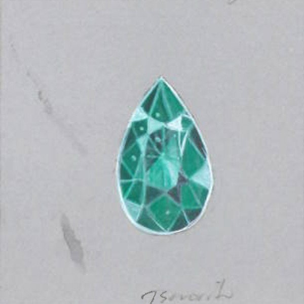
Discovered in 1967 near Kenya's Tsavo National Park. A vivid green grossular garnet that rivals emerald. Tiffany & Co. introduced it to the world gem market. Unlike emerald, tsavorite is rarely treated and requires no clarity enhancements.
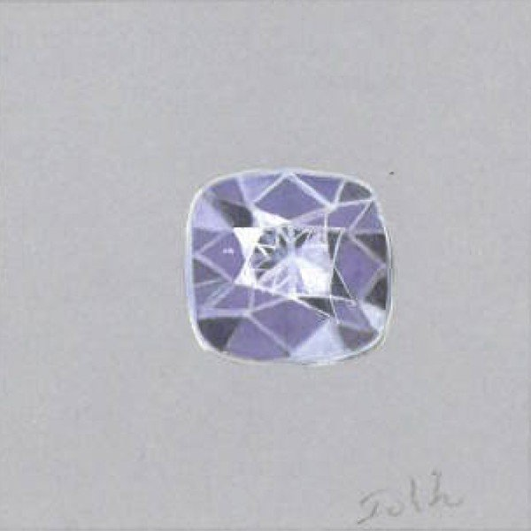
Called "the Viking compass" — its strong pleochroism allowed Norse navigators to determine the sun's position on overcast days. Shows violet, yellow, and pale blue simultaneously depending on viewing angle. Also called "water sapphire."
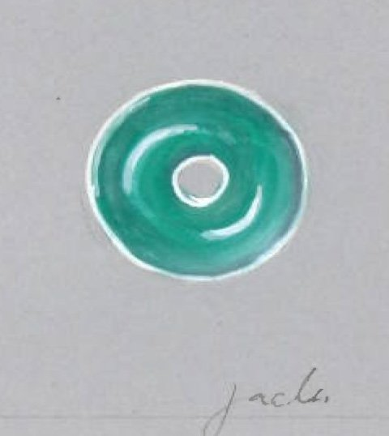
The rarest and most precious form of jade, revered for over 7,000 years. In China it is called "the stone of heaven." A Hutton-Mdivani necklace of 27 imperial jadeite beads sold for $27.4 million at Sotheby's in 2014.
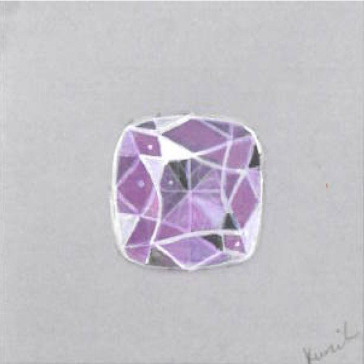
A pale pink to violet spodumene named for gemologist George Frederick Kunz, who discovered it in 1902 in California. Displays strong pleochroism — different colors when viewed from different angles. Jackie Kennedy owned a celebrated kunzite ring.
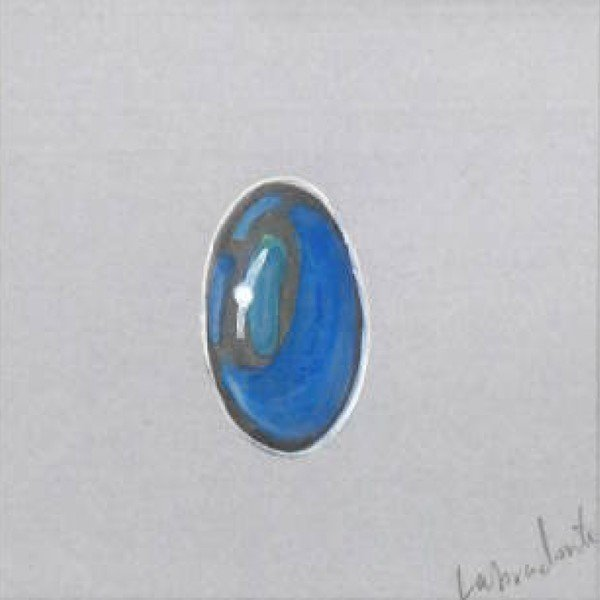
A feldspar displaying labradorescence — iridescent play of color caused by light interference within its internal structure, producing blues, greens, and golds that shift as the stone moves. Inuit legend says the Northern Lights were trapped inside it.
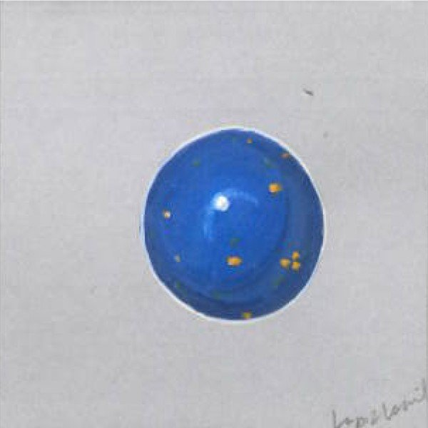
One of the oldest gemstones, mined in Afghanistan's Badakhshan province for over 6,000 years. Ground into ultramarine — the most precious blue pigment in history, used by Vermeer and Michelangelo. Found in Tutankhamun's burial mask.
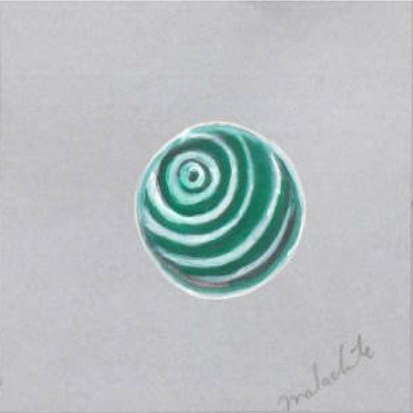
A vivid green copper carbonate with dramatic banded patterns formed by concentric growth rings. The Malachite Room in the Winter Palace, St. Petersburg, features columns and fireplaces clad entirely in the stone. Ancient Egyptians ground it as eye shadow.
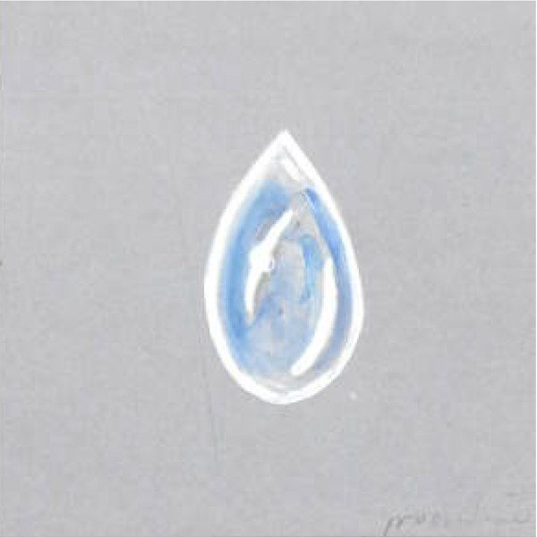
A feldspar that glows with adularescence — a billowing, floating light that moves across the stone like moonlight on water. Art Nouveau jewelers, especially René Lalique, prized it above almost all other gems for its ethereal, otherworldly quality.
Volcanic glass formed when lava cools too rapidly to crystallize. Its conchoidal fracture produces edges sharper than surgical steel — the blade of choice for prehistoric hunters and Aztec warriors. Rainbow obsidian displays extraordinary iridescent color bands.
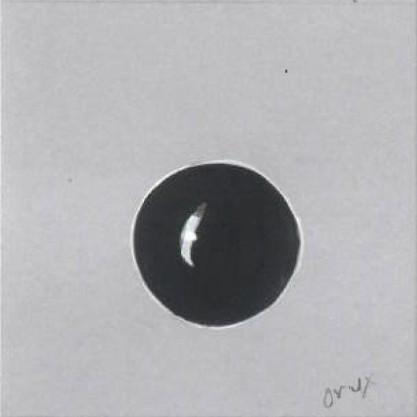
A banded chalcedony, typically black with white bands. Deeply embedded in mourning jewelry traditions since the Victorian era. Used for carving cameos since antiquity. The name comes from the Greek word for "claw" — referring to the banded pattern.
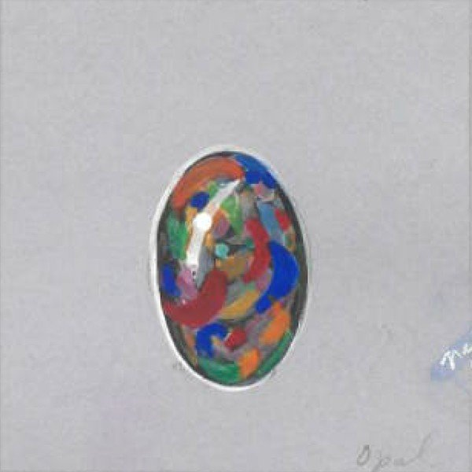
The only gemstone that displays the full color spectrum in a single stone — caused by microscopic silica spheres diffracting light. Shakespeare called it "the queen of gems." Australia produces 95% of the world's supply. Each opal is entirely unique.
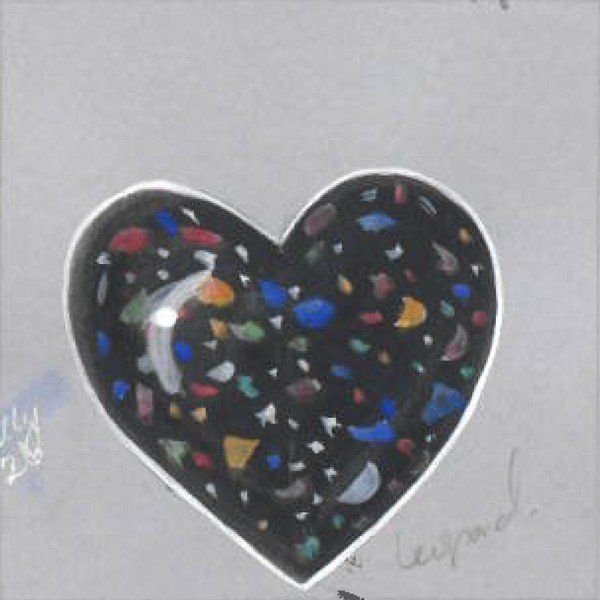
An extraordinarily rare Mexican opal variety displaying vivid play-of-color against a dark matrix background — like watching light move through the surface of still water. Named for its spotted, leopard-like color patterns.
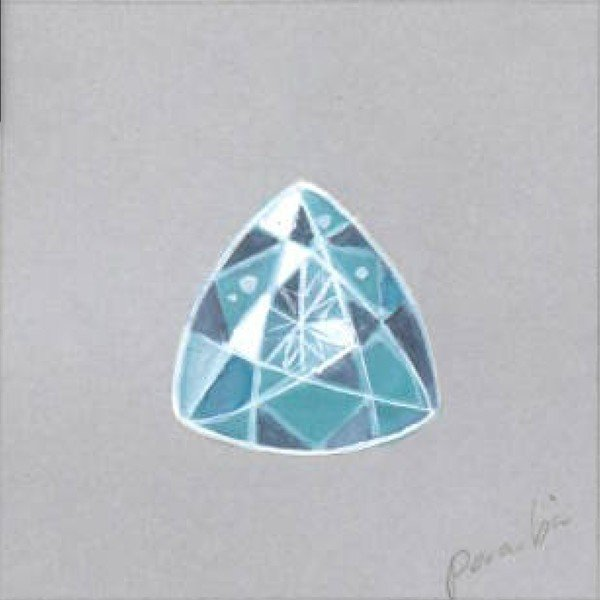
Discovered in 1987 in a single mine in Brazil after a miner spent five years digging with his hands. Its neon blue-green color — caused by copper — is unlike any other gem. Fine specimens exceed $50,000 per carat. The discovery changed fine jewelry forever.
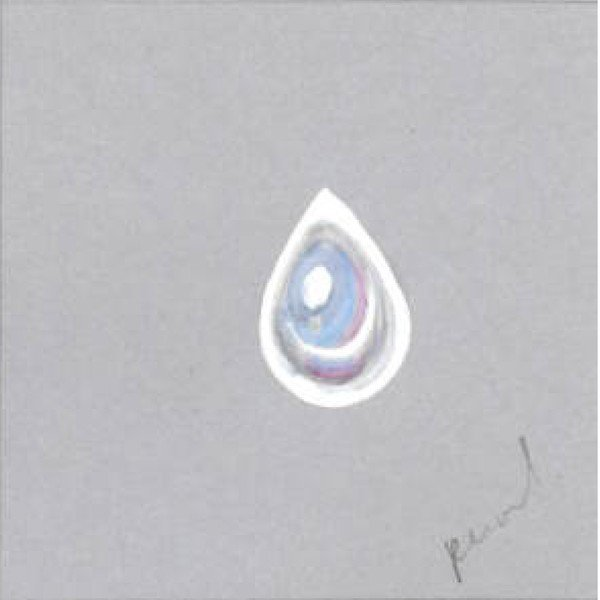
Nature's only organic gemstone, created within living mollusks over years. Each pearl is unique in lustre, shape, and color. Julius Caesar passed a law reserving pearls for the ruling class. La Peregrina — once owned by Mary I and Elizabeth Taylor — sold for $11.8M.
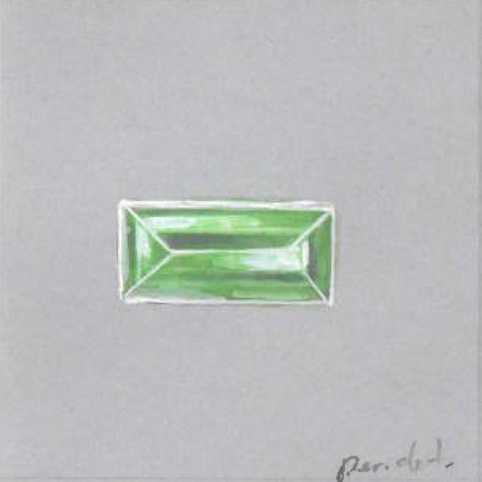
One of only two gems formed in the earth's mantle rather than the crust. Some peridot has arrived on earth inside meteorites. The ancient Egyptians called it the "gem of the sun" and mined it on the volcanic island of Zabargad for 3,500 years.
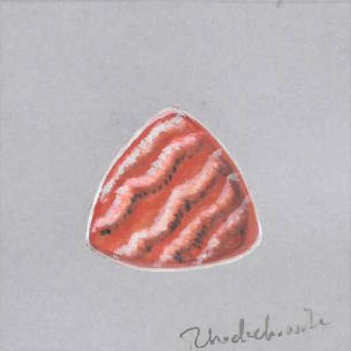
A vivid rose-pink manganese carbonate with distinctive white banding. The Incas called it Inca Rose and believed it contained the petrified blood of their ancestors. Argentina's Capillitas mine produces stalactites sliced to reveal extraordinary concentric pink rings.
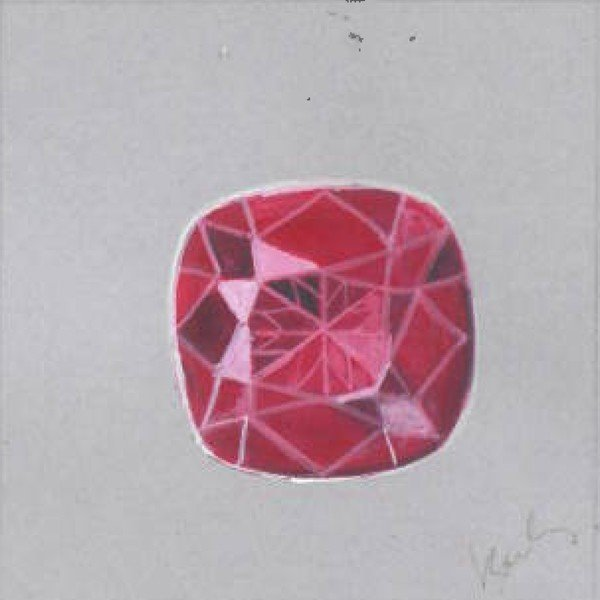
The king of gemstones. Red corundum colored by chromium. Fine Burmese rubies with "pigeon's blood" color are among the rarest and most valuable objects on earth — a 25-carat stone sold for $30M in 2015. Nelly's rubies are natural and untreated.
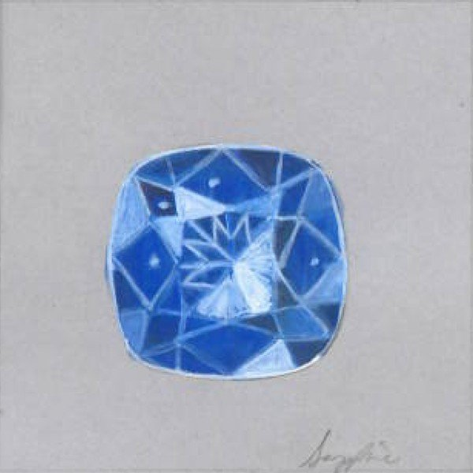
Blue corundum — ruby's sister stone. Kashmir sapphires, mined briefly between 1881 and 1887 in the Himalayas, remain the most coveted gems in the world. Princess Diana's engagement ring — now Kate Middleton's — brought a generation to sapphire.
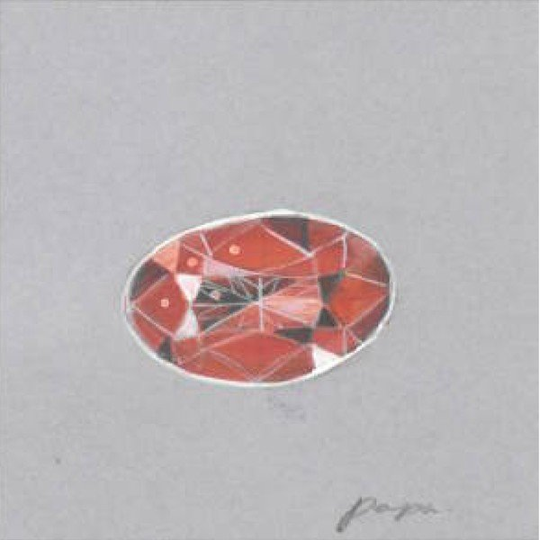
The rarest sapphire — a singular blend of pink and orange named after the Sinhalese word for lotus blossom. Its sunset hue is nearly impossible to describe and even harder to find. No universally agreed definition of the color exists — making authentication deeply subjective.
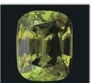
For centuries mistaken for ruby — the famous "Black Prince's Ruby" set in the British Crown Jewels is actually a 170-carat red spinel. Now prized independently for color and brilliance. Nelly uses pink spinel for its singular, saturated intensity.
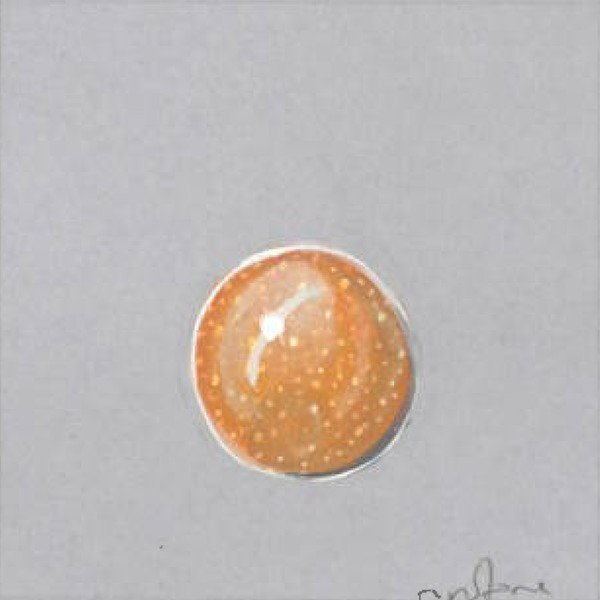
A feldspar with aventurescence — a brilliant metallic glitter from tiny copper platelets within. Oregon sunstones are the only stones in North America with native copper inclusions, creating deep reds and greens unavailable from any other source.
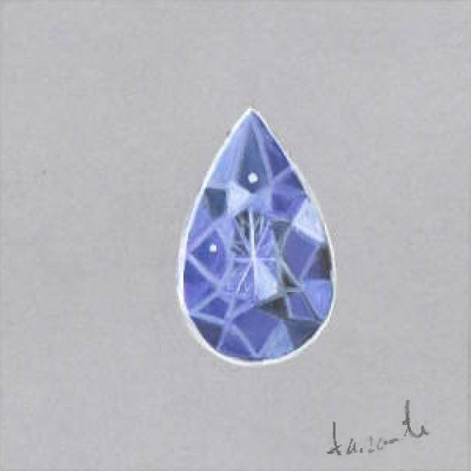
Found only in a single 4km strip at the foot of Mount Kilimanjaro, discovered in 1967. Its trichroic nature shows blue, violet, and burgundy simultaneously. Introduced to the world by Tiffany & Co. Geologists believe it will be exhausted within decades.
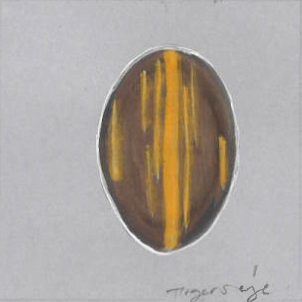
A golden-brown chatoyant quartz that displays a shifting band of light across its surface — called the "cat's eye effect." Ancient Roman soldiers wore engraved tiger's eye into battle. The optical effect is created by parallel fibrous inclusions of crocidolite.
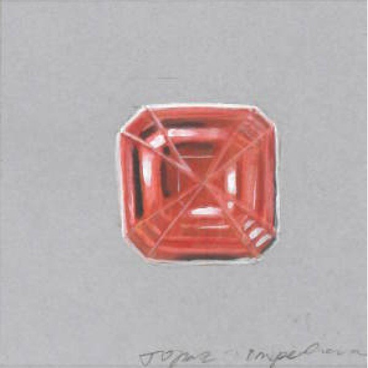
The rarest topaz — a rich orange with pink overtones found only in Ouro Preto, Brazil. Once reserved exclusively for the Russian royal family. The restricted ownership gave rise to the word "imperial." Natural stones deepen in color when exposed to direct sunlight.
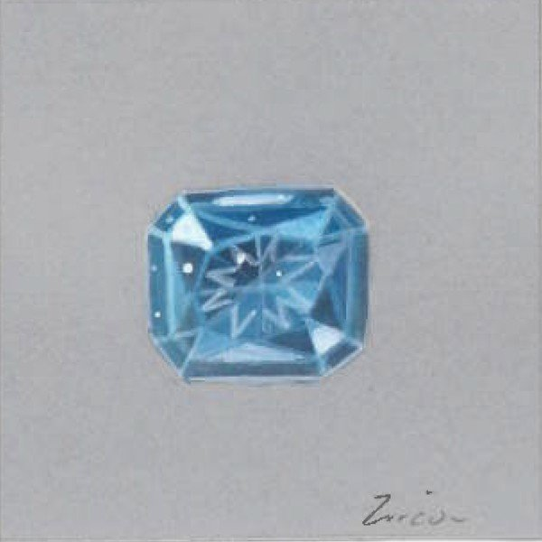
Pure topaz is colorless — the blue is produced by irradiation and heat treatment. Sky Blue, Swiss Blue, and London Blue are the three commercial grades, progressing from pale to deep. The ancient Greeks believed topaz could cool boiling water and calm violent rage.
Vivid green tourmaline colored by chromium — the same element that makes emeralds green. East African chrome tourmalines from Tanzania and Kenya rival the finest emeralds in color saturation while commanding far lower prices. Increasingly sought after by connoisseurs.
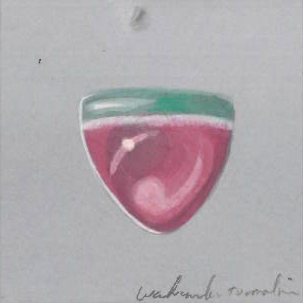
A single crystal transitioning from pink at center to green at the outer edges — nature replicating a watermelon's pattern with extraordinary precision. Sliced cross-sections reveal the full color zoning in concentric rings. No two slices are ever identical.
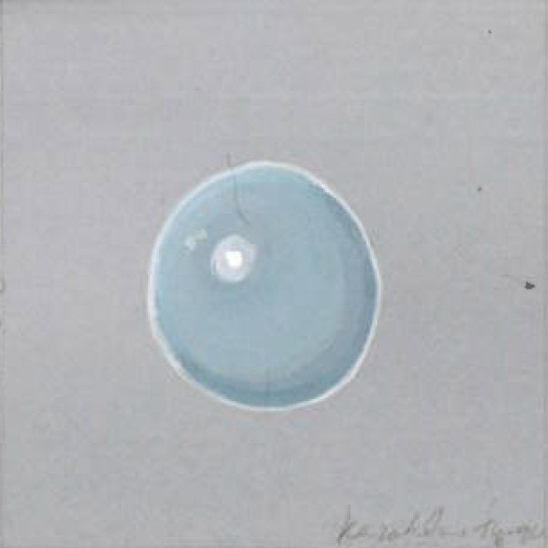
Among the rarest turquoise in the world, prized for its vivid, even sky-blue color with minimal matrix. Mined in small quantities by family operations in the Steppe region. Nelly sources directly and selects only untreated stones of exceptional color.
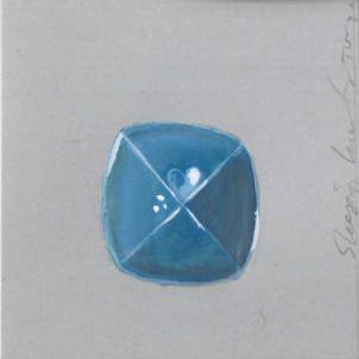
Named for the mountain silhouette above its Arizona mine. Famous for pure, even robin's-egg blue — the cleanest turquoise tone in the world, virtually free of matrix. The mine closed permanently in 2012, making existing stones increasingly rare and valuable.

Earth's oldest known mineral — some Australian zircon crystals are 4.4 billion years old, older than any rock on the planet. Blue zircon has exceptional brilliance and fire rivaling diamond. Completely distinct from synthetic cubic zirconia — an entirely different material.
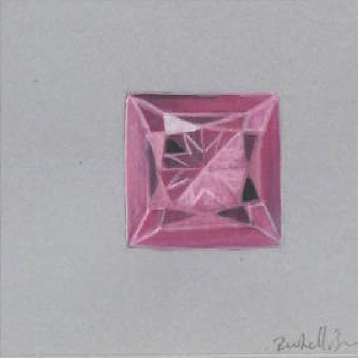
The finest grade of pink-red tourmaline — distinguished by its ability to maintain deep red-pink color under both daylight and artificial light. Unlike ordinary pink tourmaline which turns brown indoors, true rubellite holds its intensity in every lighting condition.
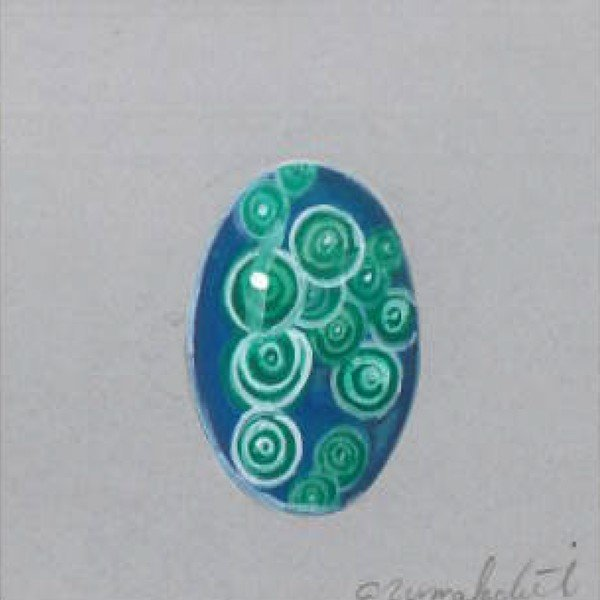
A deep, vivid blue copper carbonate mineral often found alongside malachite. Crushed azurite was the blue pigment in medieval and Renaissance paintings before ultramarine. Its intense, electric color is unlike any other gemstone.
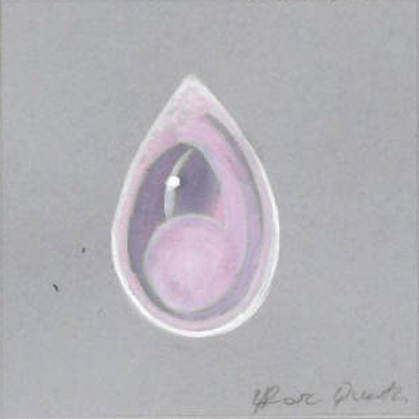
The soft, translucent pink of rose quartz has made it one of the most beloved gemstones since antiquity. Ancient Romans used it as a seal believing it could prevent aging. Its gentle blush to deep rose color carries a timeless, quietly romantic presence.
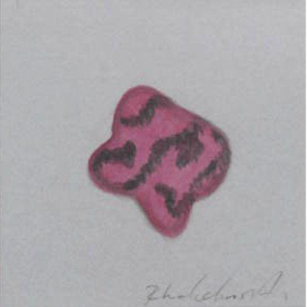
A striking pink stone defined by dramatic black manganese oxide veins that create a graphic, architectural pattern across the surface. Russia once used it to panel grand imperial interiors. Bold and sculptural — it pairs beautifully with yellow gold.
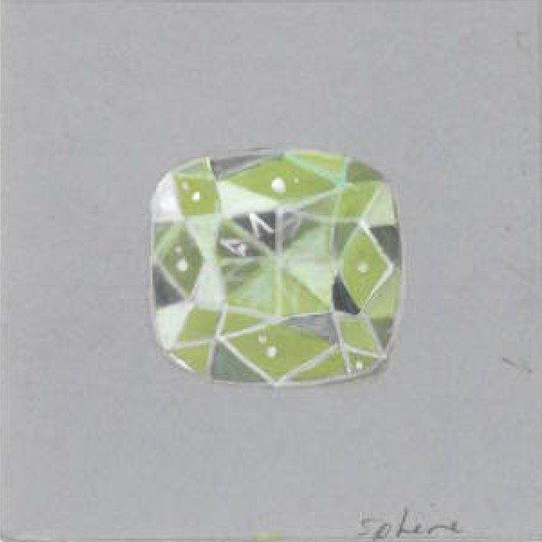
Sphene possesses fire three times greater than diamond — its dispersion splits white light into a dazzling rainbow with unmatched intensity. Its golden-green to orange-brown body color combined with this extraordinary fire makes it one of the most visually dramatic gemstones in existence.
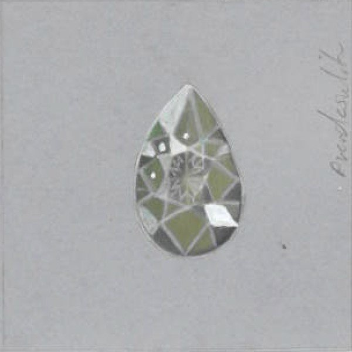
One of the most remarkable pleochroic gemstones — andalusite displays different colors simultaneously depending on viewing angle, shifting between green, gold, and reddish-brown in a single stone. Its strong pleochroism means no two faceted stones are ever identical in color play.
Gemstone illustrations © Nelly Creative Studios. Descriptions written by Nelly Creative Studios.